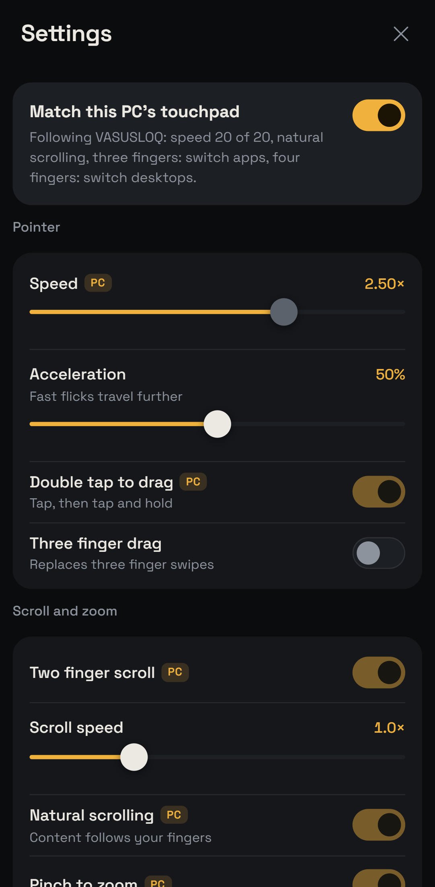
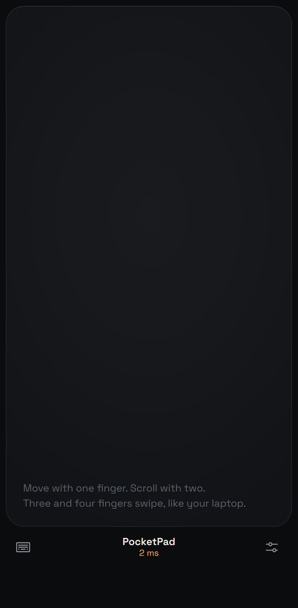
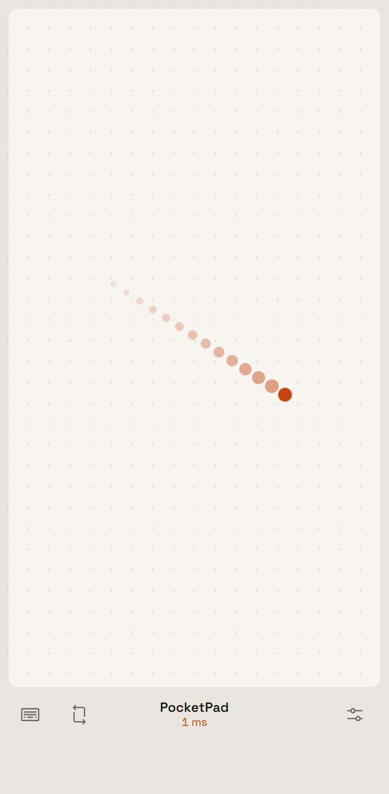
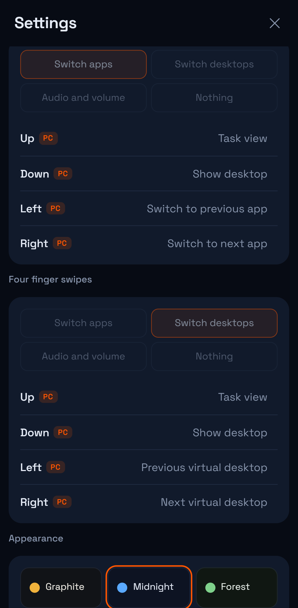
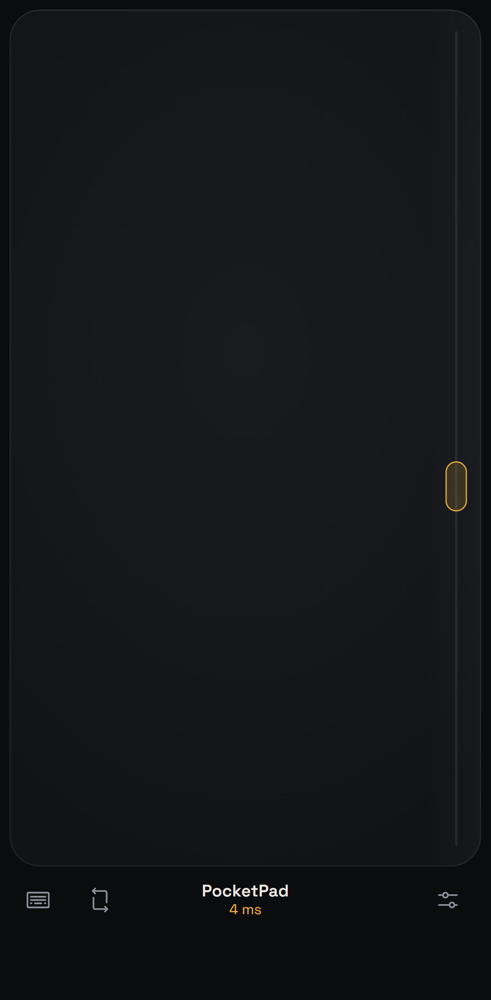

Your phone is the trackpad you wanted.
Every gesture from a Windows precision touchpad, on the screen already in your pocket. Runs against Windows, macOS and Linux. Nothing to install on the phone. Free and open source.
Drag here
The gestures your hands already know.
The same vocabulary as the Windows touchpad settings page. On connect, the host reads your PC's touchpad preferences and the phone follows them, so three fingers do on the phone exactly what they do on the laptop.

It reads your PC. You don't configure anything.
- Cursor speed, scroll direction, taps, drag, pinch, swipe presets come straight from the system's touchpad settings on connect.
- Windows mouse acceleration and the pointer speed slider are compensated for, so motion is one to one with the phone.
- Every touch sample is sent immediately as a nine byte frame, and the host smooths them at 500 Hz so Wi-Fi burstiness never becomes cursor stutter.
- Turn it off and tune the phone independently. Six themes, any accent colour, surface textures, touch effects.
Three ways to connect. Pick your latency.
The round trip shows live in the dock. These are the ranges measured on a home network with a mid-range Android phone.
pocketpadpocketpad --hotspotpocketpad --usbMake it yours.
Themes, a free accent colour, pad surfaces, touch effects, sharp or round corners, vibration strength. Everything lives on the phone, so each phone can look different.




Install in a minute.
The host runs on the computer. The phone only needs a browser.
- Download PocketPad-windows.exe and run it. SmartScreen asks once because the file is unsigned; choose "More info", then "Run anyway".
- Allow it on private networks when the firewall asks.
- Scan the QR with your phone on the same Wi-Fi. Tap once for full screen, or add it to the home screen.
# or, with Python 3.10+
pipx install git+https://github.com/vasu-devs/PocketPad
pocketpad
- Download PocketPad-macos, then in Terminal:
chmod +x ~/Downloads/PocketPad-macos
xattr -d com.apple.quarantine ~/Downloads/PocketPad-macos # unsigned build
~/Downloads/PocketPad-macos
- Grant Accessibility to Terminal under System Settings, Privacy & Security, Accessibility. Without it macOS silently drops synthetic clicks and keys.
- Scan the QR with your phone on the same Wi-Fi.
# or, with Python 3.10+
pipx install git+https://github.com/vasu-devs/PocketPad
pocketpad
- Download PocketPad-linux, then:
chmod +x ~/Downloads/PocketPad-linux ~/Downloads/PocketPad-linux
- X11 sessions get full control. On Wayland, injection reaches XWayland apps only for now.
- Scan the QR with your phone on the same Wi-Fi. Shortcuts follow GNOME defaults and can be changed on the phone.
# or, with Python 3.10+
pipx install git+https://github.com/vasu-devs/PocketPad
pocketpad